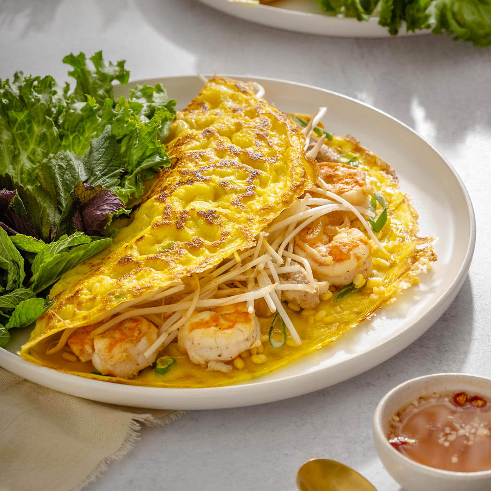

Vietnamese Crepes

Scrumptious, savory Vietnamese crepe with fish sauce for dipping.
Bánh Xèo is a Vietnamese savory crepe made from a turmeric and rice flour batter. It is filled with mung beans, shrimp, thinly sliced pork, and bean sprouts, creating a delicious combination of textures and flavors. The crepe is cooked until crispy and golden, then typically served wrapped in lettuce with fresh herbs and dipped in nuoc cham, a tangy Vietnamese dipping sauce.
Ingredients
For the Batter:
- 1 cup dried mung beans, soaked
- 1 cup water
- 1/2 cup coconut milk (full-fat)
- 1 cup rice flour
- 1/4 cup cornstarch
- 1/4 cup all-purpose flour
- 1/2 teaspoon turmeric powder
- 1/2 teaspoon sugar
- 1/2 teaspoon salt
- 3 scallions, finely sliced
For the Fillings:
- 1/2 lb pork belly, thinly sliced
- 1/2 lb shrimp, peeled and deveined
- 1 yellow onion, thinly sliced
- 1/2 cup steamed mung beans
- 1/2 cup bean sprouts
For Serving:
- Lettuce leaves
- Mint
- Vietnamese perilla
- Nuoc cham (Vietnamese dipping sauce)
Steps to Create the Dish
- Prepare the Mung Beans:
- Soak 1 cup of mung beans in water for at least 1 hour or overnight. Drain and blend half with coconut milk until smooth. Set aside the other half for steaming.
- Mix the Batter:
- In a large mixing bowl, combine the mung bean mixture, rice flour, cornstarch, water, scallions, turmeric, sugar, and salt. Mix well and let the batter rest for at least 2 hours or overnight.
- Prepare the Fillings:
- In a skillet, heat 2 tablespoons of vegetable oil. Add the pork, shrimp, and onion. Cook until the shrimp is pink and cooked through, then set aside.
- Steam the remaining mung beans until tender.
- Cook the Bánh Xèo:
- Heat a nonstick skillet over medium-high heat. Add some pork, shrimp, and onion to the pan. Stir the batter and pour in about 2/3 cup, swirling to coat the pan evenly. Scatter mung beans and bean sprouts on top. Drizzle oil around the edges and cover, cooking for about 2 minutes. Remove the lid and cook until crispy and golden, about 5-7 minutes. Fold the crepe in half.
- Serve:
- Slide the crepe onto a plate and serve immediately with lettuce, mint, and nuoc cham. Repeat with the remaining ingredients.
Return to home